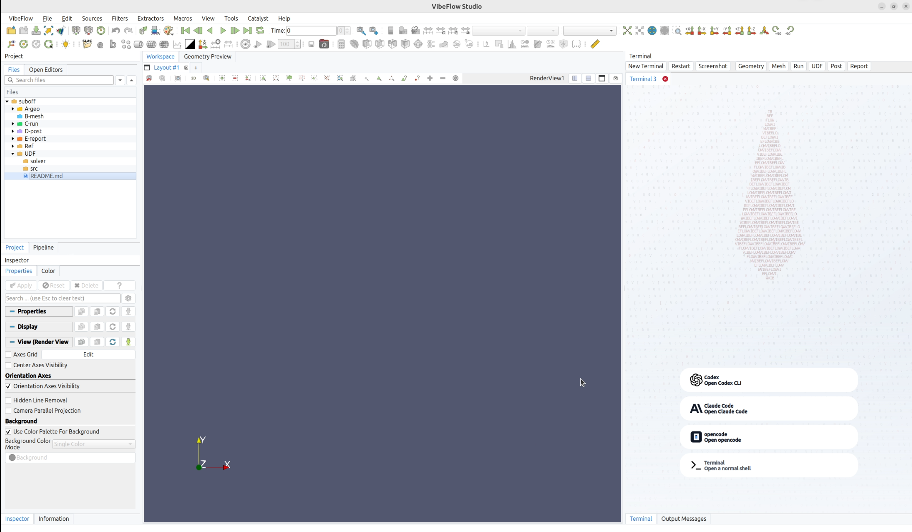
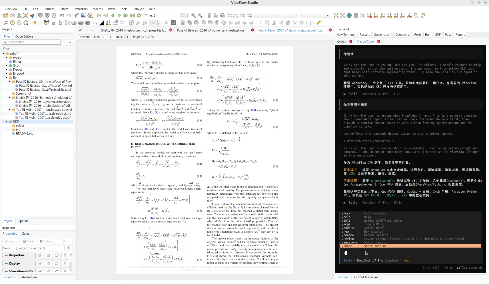
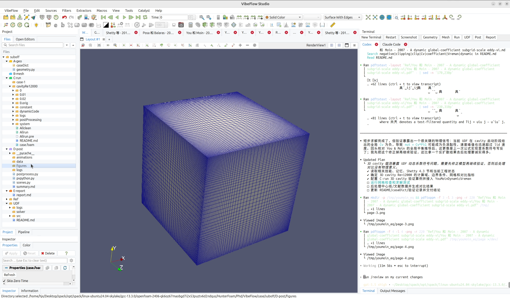
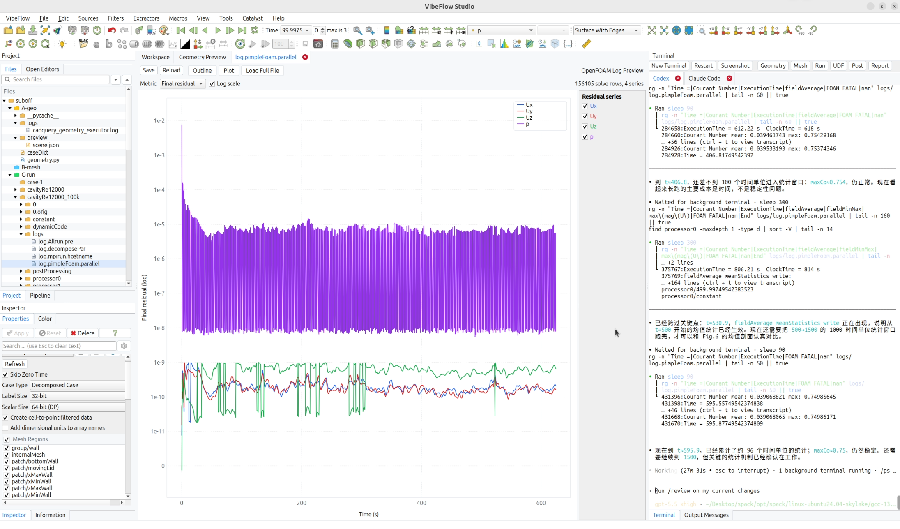
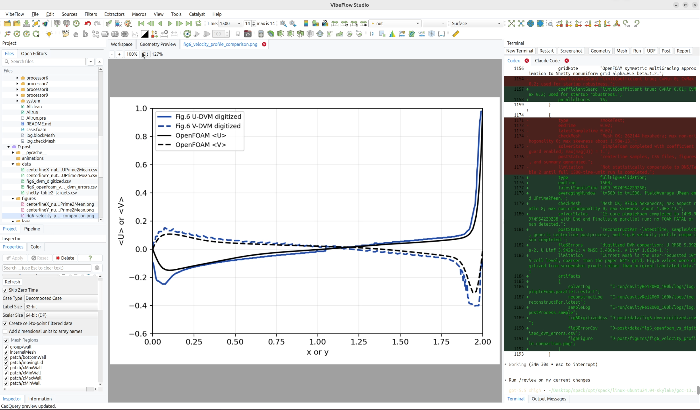
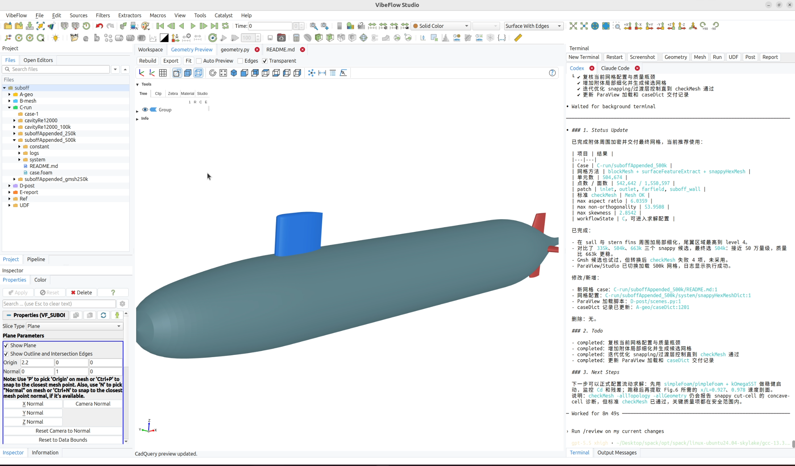
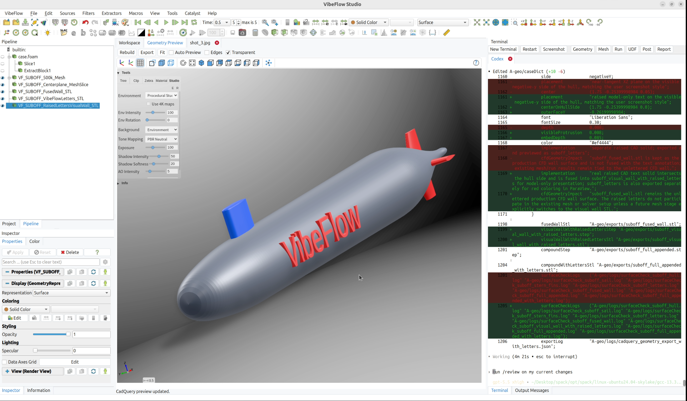
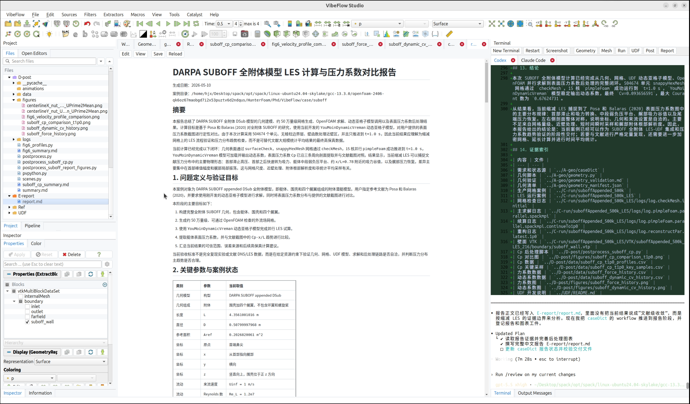
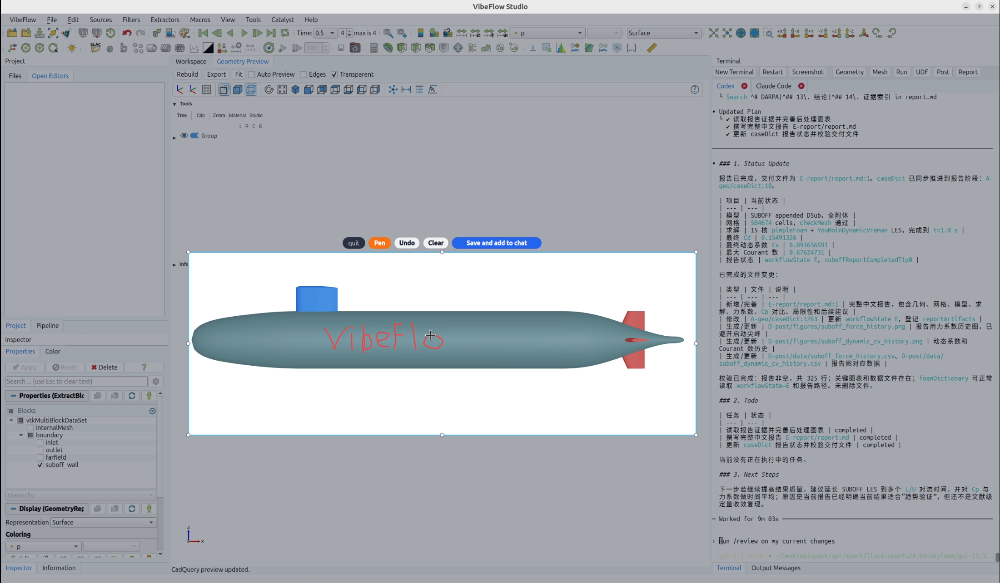
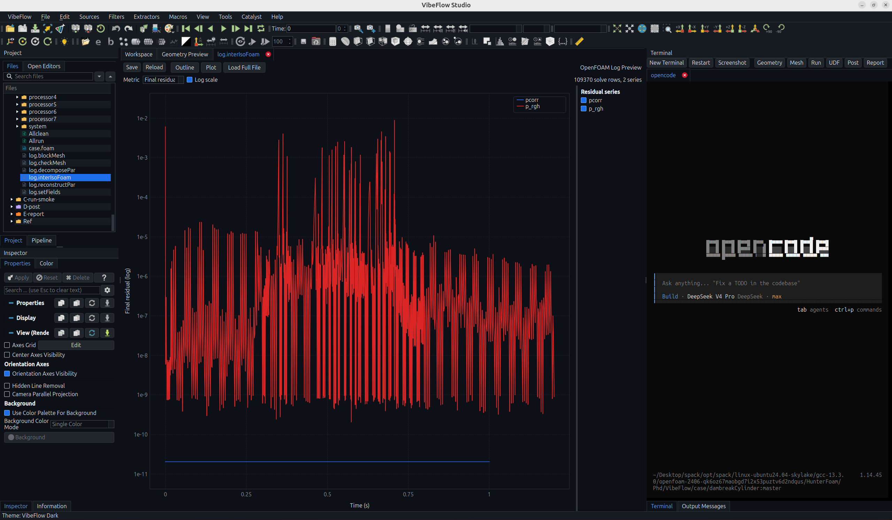

The Intelligent CFD Workstation: the best way to use AI-Assisted CFD 智能 CFD 工作台：使用 AI 辅助 CFD 的最佳方式
From natural language to traceable research reports. Two modes: Usage Mode for the full CFD workflow, Development Mode for custom solvers and libraries — all powered by AI. 从自然语言描述到可追溯的研究报告。两种模式：使用模式覆盖完整 CFD 工作流，开发模式用于自定义求解器与库——全程由 AI 驱动。
VibeFlow operates in two distinct modes, each with dedicated stage pipelines and specialized AI skills tailored to different research objectives. VibeFlow 以两种独立模式运行，每种模式都有专属的阶段流程和针对不同研究目标定制的 AI skills。
Use A-geo/caseDict as the single source of truth and advance through requirement clarification, parametric geometry, meshing, simulation, post-processing, and report generation. Every stage gates the next; all artifacts trace back to caseDict.
以 A-geo/caseDict 为单一事实源，逐步推进需求澄清、参数化几何、网格划分、仿真求解、后处理与报告生成。每个阶段对下一阶段进行门控，所有产物均可追溯至 caseDict。
Develop custom OpenFOAM solvers, libraries, boundary conditions, turbulence models, functionObjects, fvOptions, and post-processing tools. All UDF code lives under UDF/ and integrates seamlessly into Usage Mode cases.
开发自定义 OpenFOAM 求解器、库、边界条件、湍流模型、functionObjects、fvOptions 及后处理工具。所有 UDF 代码位于 UDF/ 目录下，可无缝集成到使用模式算例中。
Every component ensures physical accuracy, parameter traceability, and reproducible outcomes. 每个组件均确保物理精度、参数可追溯性与可复现的研究结果。
Every parameter, assumption, and boundary condition in one verified caseDict. Geometry, mesh, solver, and report all derive consistently — no hidden state, no parameter drift.每个参数、假设和边界条件均存储在唯一经验证的 caseDict 中。几何、网格、求解器和报告均从同一事实源一致派生，无隐含状态，无参数漂移。
Six usage stages and five development stages, each with human confirmation gates. AI handles geometry, meshing, solver setup, and reporting. You own the critical physics decisions.六个使用阶段与五个开发阶段，每个阶段配备人类确认门控。AI 处理几何、网格、求解器和报告，关键物理决策由您掌控。
Direct access to local OpenFOAM tutorials, solver source code, and official docs. Verified facts from real source files — not hallucinated summaries or stale RAG chunks.直接访问本地 OpenFOAM 教程、求解器源码和官方文档，从真实源文件验证事实，而非幻觉摘要或过时的 RAG 片段。
Every report claim links to a specific file, log, measurement, or reference. VibeFlow measures Sphys and Strace — not just execution success rate.报告中每个结论均链接到特定文件、日志或测量值。VibeFlow 评估 Sphys（物理保真度）与 Strace（证据可追溯性），而非仅追求运行成功率。
Fully adaptive to your local OpenFOAM installation. Auto-discovers tutorials, solver families, boundary condition patterns, and custom UDF libraries for seamless version-aware case generation.完全自适应本地 OpenFOAM 安装，自动发现教程、求解器族、边界条件模式及自定义 UDF 库，实现版本感知的算例生成。
CadQuery parametric CAD, Gmsh, blockMesh, snappyHexMesh — all driven from caseDict. Reproducible geometry with boundary layer control, y+ targeting, and checkMesh quality gates.CadQuery 参数化 CAD、Gmsh、blockMesh、snappyHexMesh，均由 caseDict 驱动。可复现几何，具备边界层控制、y+ 目标与 checkMesh 质量门控。
Switch between Usage Mode and Development Mode. Click any stage to expand details.在使用模式与开发模式之间切换，点击任意阶段展开详情。
Watch a hands-on walkthrough of the complete VibeFlow workflow — from requirements to report, driven entirely by natural language. 观看完整操作演示——从需求描述到报告交付，全程由自然语言驱动，无需手动配置任何文件。
From geometry to report — see exactly what VibeFlow delivers at every stage of your CFD research workflow. 从几何建模到报告生成，逐阶段查看 VibeFlow 在每个 CFD 研究步骤中的真实交付成果。

The main interface opens with a full project file tree on the left — every case file, dictionary, log, and artifact is instantly accessible and editable. On the right, the Agent entry panel lets you choose any LLM tool you prefer, seamlessly bridging your research intent with the full CFD pipeline. 启动后左侧呈现完整项目文件树，涵盖所有算例文件、字典、日志与产物，可随时查看与修改。右侧为 Agent 入口，支持选择您习惯使用的任何 LLM 工具，将研究意图与完整 CFD 流程无缝衔接。

VibeFlow is not just a simulation tool — it is a seamless research platform. The Agent can read, summarize, and cross-reference CFD papers, extracting boundary conditions, physical parameters, and validation data directly into your caseDict without manual transcription errors. VibeFlow 不只是仿真工具，更是无缝集成的 CFD 研究人员工作流平台。Agent 可阅读、摘要和交叉引用 CFD 文献，直接将边界条件、物理参数与验证数据提取写入 caseDict，无需手动转录，杜绝抄录错误。

Powered by Codex, VibeFlow autonomously runs the complete CFD pipeline end-to-end, detects errors at every stage, and self-repairs them without user intervention. The final result is delivered with verified accuracy — no more manual debugging loops. 借助 Codex，VibeFlow 自主执行完整 CFD 流程，在每个阶段检测错误并自主修复，无需用户干预。最终以准确的结果交付，彻底告别手动调试的反复循环。

One click plots live residual curves from solver logs, updating as the simulation runs. The Agent independently watches logs, identifies convergence issues or divergence events, and takes autonomous corrective action — keeping your simulation on track without babysitting. 一键解析日志并实时绘制与更新残差图，随仿真进行动态刷新。Agent 自主观测日志、识别收敛异常或发散事件，并自主接管全流程纠偏，让您从盯屏守候中彻底解放。

VibeFlow automatically generates comparison plots against reference data, experimental measurements, or analytical solutions — ensuring physical fidelity at every run. Intelligence does not come at the cost of rigor: AI4CFD should be a credible research tool, not a toy. VibeFlow 自动给出与参考数据、实验测量或解析解的对比图，每次运行均保证严格的物理准确性。智能化不以严谨性为代价——AI4CFD 应当是可信赖的研究工具，而非玩具。

Describe your geometry in plain language and VibeFlow constructs precise parametric CAD using CadQuery. The meshing strategy — structured, unstructured, or hybrid — is decided intelligently based on the physics, ensuring simulation-ready quality without manual tuning. 用自然语言描述几何形状，VibeFlow 即可使用 CadQuery 准确构建参数化 CAD 模型。网格策略（结构化、非结构化或混合）根据物理问题智能决策，无需手动调优即可达到仿真就绪质量。

Forget complex ParaView button sequences. Simply describe what you want to visualize — a pressure slice, a velocity isosurface, a streamline field — and VibeFlow translates your words into a fully rendered ParaView scene, automatically loaded and displayed. 不再需要记忆复杂的 ParaView 操作路径。只需用语言描述想要的可视化内容——压力切片、速度等值面、流线场——VibeFlow 将自动将描述转化为完整 ParaView 场景并加载呈现。

VibeFlow automatically assembles a structured research report from all upstream artifacts. Every key result — drag coefficients, pressure distributions, convergence history — is linked to specific files, logs, and references, producing a self-contained, publication-quality document. VibeFlow 从所有上游产物自动组装结构化研究报告。每项关键结果——阻力系数、压力分布、收敛历史——均链接至具体文件、日志和文献，生成自洽的、具有发表质量的完整报告。

Want to modify the geometry or adjust a boundary? Use the built-in screenshot key to capture the current view, annotate it freely — arrows, circles, highlights — and the Agent interprets your markup to construct a precise, actionable prompt. No rigid interface forms required. 想要修改模型或调整边界？使用内置截图键捕获当前视图，随意涂鸦标注——箭头、圈选、高亮——Agent 将理解您的标记内容，高效构建准确的执行 prompt，无需填写任何繁琐表单。

VibeFlow features a refined dark theme optimized for long coding and simulation sessions. High-contrast, low-fatigue aesthetics keep the focus on your results — not the interface. Because great CFD research deserves a workspace that feels as good as it performs. VibeFlow 配备精心调校的暗色主题，专为长时间编码与仿真会话优化。高对比、低疲劳的视觉设计让您聚焦于研究结果本身，而非界面操作——因为优秀的 CFD 研究值得一个既高效又舒适的工作环境。
Start for free. Upgrade when you need more power. 免费开始，按需升级。
Full-featured trial. No credit card required. Explore the complete workflow and both agent modes. 全功能试用，无需信用卡。探索完整工作流与两种智能体模式。
Everything in Free, plus unlimited cases, priority support, and access to all future features as they ship. 包含试用版所有功能，另加无限算例、优先支持及所有新功能的第一时间访问。
Best value for sustained research projects. Save over 16% compared to monthly billing. 持续研究项目的最优选择，相比按月计费节省逾 16%。
All plans include a 15-day free trial. No credit card required to start. 所有方案均包含 15 天免费试用，无需绑定任何支付方式。
Documentation, tutorials, community, and integrations — everything you need to get started. 文档、教程、社区与集成——一切您需要的入门资源。
Free 15-day trial included on all platforms.所有平台均含 15 天免费试用。